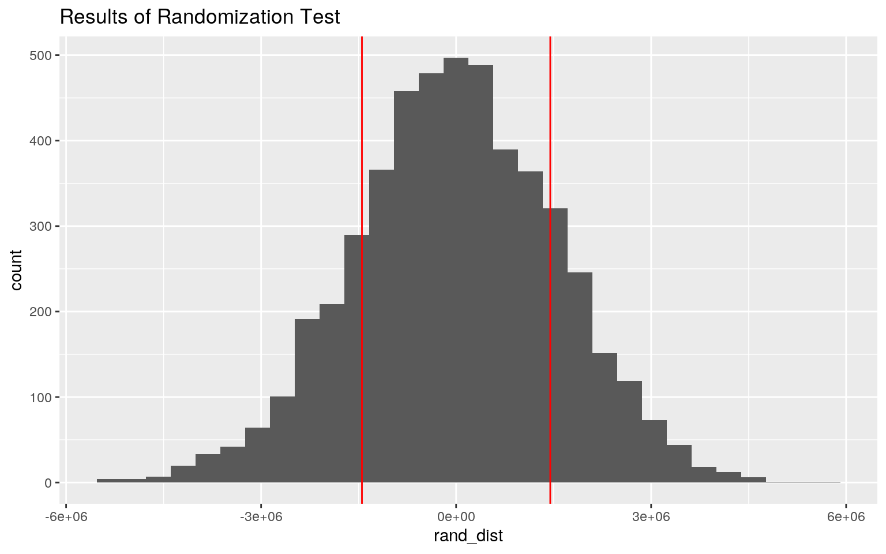
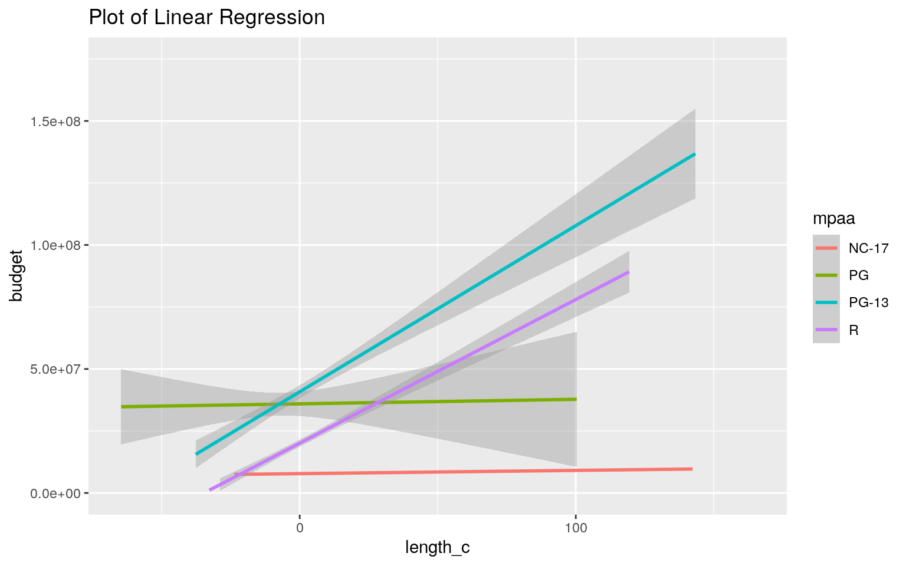
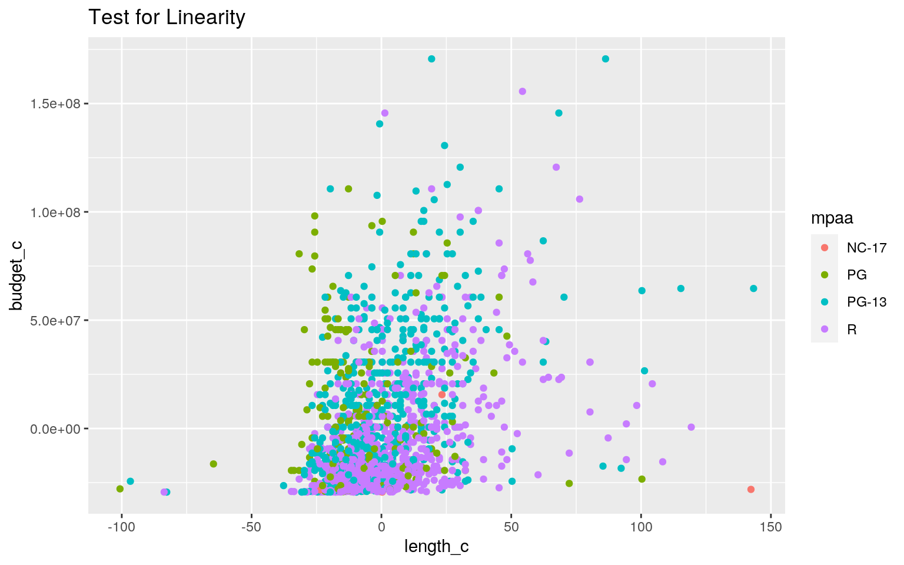
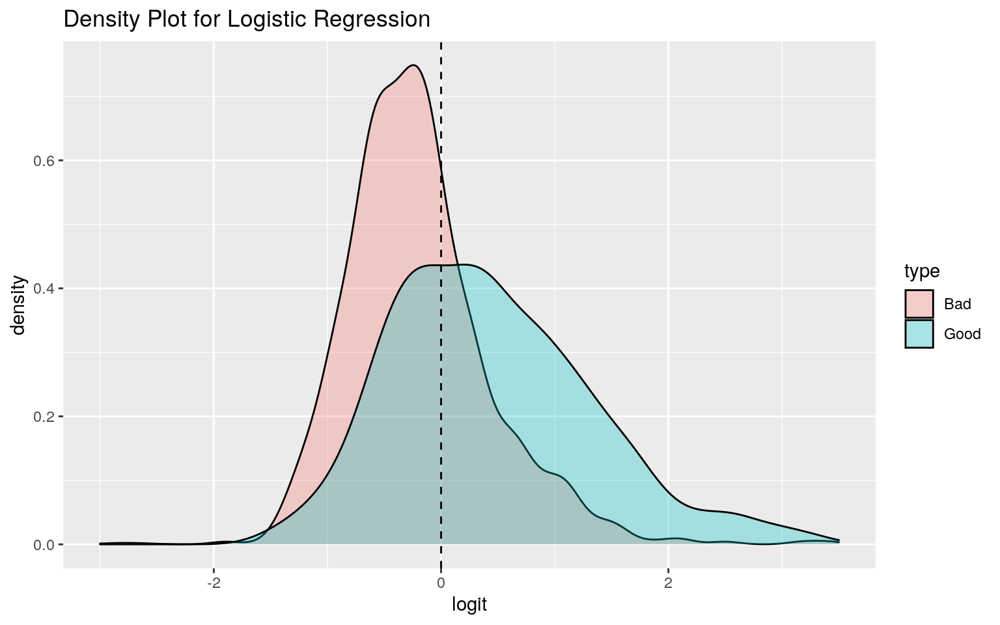
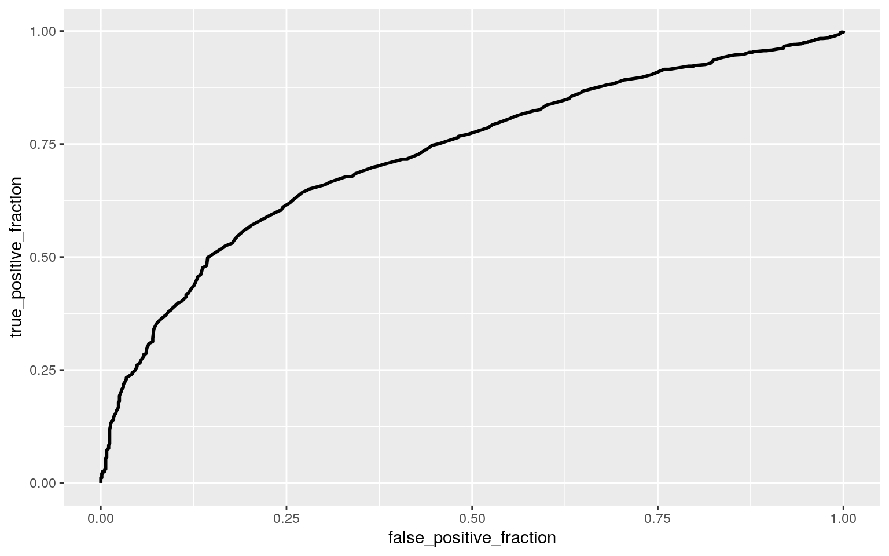

With this project, I sought to continue with the theme of my first project: movies. I found a great dataset containing the information for over 58,000 movies listed on IMDb (the internet movie database). For each movie, the title, length of the movie (in minutes), year it was made, budget (in US dollars), IMDb rating (on a scale of 1-10, with 10 being the highest rated movie), total user votes for that movie, other rating information, mpaa rating (PG, PG-13, R or NC-17) and genre were given. To get started, I omitted rows containing NAs, giving me a new dataset with 1,813 observations. I also deleted columns that were not relevant (total user vote and other rating information). The different genres were each their own column and included binary information, but I decided to combine the genres into one column. Finally, I created my own binary variable based on the movie's rating; if the movie's rating is above a 6.1 (cutoff determined by code), the movie is considered "good".
#Getting started
library(readr)
movies <- read_csv("movies.csv") #reading the dataset in
movies1<-movies %>% na.omit() #omitting NAs
movies2 <- movies1 %>% select(-X1,-r1,-r2,-r3,-r4,-r5,-r6,-r7,-r8,-r9,-r10,-votes) #removing unnecessary variable
movies3<-movies2 %>% mutate(clump_cat=ntile(rating,2)) #separating "rating" into two categories
movies3$type <- factor(movies3$clump_cat, labels=c("Bad","Good")) #creating variable "type" from categories previously created
movies4 <- movies3 %>% select(-clump_cat) %>% mutate(y=ifelse(type=="Good",1,0)) #making "type" a binary variable (1="Good" movie, 0="Bad" movie)
movies5 <- movies4 %>% pivot_longer(7:13, names_to="genre") %>% filter(value==1) %>%
group_by(title) %>% mutate(genre=paste(genre,collapse = ", ")) %>% distinct() %>% select(-value) #collapsing all genre data into a column called "genre"
movies5 <- movies5 %>% ungroup() #ungroupingThe first test to be performed on my dataset was the MANOVA test. I decided to run this test to check for significant mean differences in "length" and "budget" across the different mpaa ratings (PG,PG-13, R, and NC-17) for the movies. The results show that the different mpaa ratings differed significantly for at least one of the two variables (Pillai trace = .13, pseudo F(2, 1605) = 121.01, p < 2.2e^-16). To determine which of the two dependendant variables had significant mean differences based on the rating of movie, univariate ANOVAs were run; these showed that both "length" and "budget" were significant. Post-hoc t-tests were then run to determine which groups differ for each variable. First, type-I errors had to be taken into account and adjusted for. The total number of tests run was 15 (one MANOVA, two univariate ANOVAs, and 12 t-tests), which creates a 53% probability of making at least one type-I error. To adjust for this, the new alpha value used (as per the Bonferroni correction) is 0.0033. With this alpha value, the results of the post-hoc analysis are as follows. For "length", the only significant mean differences are between NC-17 & PG, PG & PG-13, and PG & R. For "budget", the only significant mean differences are between PG & R and PG-13 & R. The first assumption for the MANOVA (multivariate normality) was violated (p-value < 0.05), which means that the other assumptions are violated as well.
man1<- manova(cbind(length,budget)~mpaa,data=movies5) #running and saving test
summary(man1) #results of MANOVA test## Df Pillai approx F num Df den Df Pr(>F)
## mpaa 3 0.14909 43.066 6 3208 < 2.2e-16 ***
## Residuals 1604
## ---
## Signif. codes: 0 '***' 0.001 '**' 0.01 '*' 0.05 '.' 0.1
' ' 1summary.aov(man1) #results of univariate ANOVAs## Response length :
## Df Sum Sq Mean Sq F value Pr(>F)
## mpaa 3 14881 4960.5 10.895 4.379e-07 ***
## Residuals 1604 730282 455.3
## ---
## Signif. codes: 0 '***' 0.001 '**' 0.01 '*' 0.05 '.' 0.1
' ' 1
##
## Response budget :
## Df Sum Sq Mean Sq F value Pr(>F)
## mpaa 3 1.6259e+17 5.4196e+16 61.484 < 2.2e-16 ***
## Residuals 1604 1.4139e+18 8.8147e+14
## ---
## Signif. codes: 0 '***' 0.001 '**' 0.01 '*' 0.05 '.' 0.1
' ' 1pairwise.t.test(movies5$length,movies5$mpaa, p.adj="none") #post-hoc for "length"##
## Pairwise comparisons using t tests with pooled SD
##
## data: movies5$length and movies5$mpaa
##
## NC-17 PG PG-13
## PG 0.0025 - -
## PG-13 0.0407 7.7e-07 -
## R 0.0339 9.1e-07 0.6066
##
## P value adjustment method: nonepairwise.t.test(movies5$budget,movies5$mpaa, p.adj="none") #post-hoc for "budget"##
## Pairwise comparisons using t tests with pooled SD
##
## data: movies5$budget and movies5$mpaa
##
## NC-17 PG PG-13
## PG 0.0250 - -
## PG-13 0.0050 0.0072 -
## R 0.2982 1.4e-10 < 2e-16
##
## P value adjustment method: none1-(0.95^15) #calculation for probability of type-I error## [1] 0.53670880.05/15 #Bonferroni Correction for alpha## [1] 0.003333333#Assumptions:
library(rstatix)
group <- movies5$mpaa
DVs <- movies5 %>% select(budget,length) #movies6 was used instead of movies5 because "title" needed to be removed and select(-title) did not work
#Test multivariate normality for each group (null: assumption met)
sapply(split(DVs,group), mshapiro_test)## NC-17 PG PG-13 R
## statistic 0.52006 0.8859432 0.8606229 0.8587157
## p.value 4.400953e-05 2.991799e-11 7.33458e-21
1.593866e-27#If any p<.05, stop (assumption violated). When I consider what goes into making a good movie, I immediately think of budget; a good movie almost always has a bigger and better budget than a bad one. I decided to test this by doing a randomization test and determining whether or not the budgets of good and bad movies are different. For this test, the null hypothesis is that there is no difference between the budgets of the two types of movies, and the alternative hypothesis states that the budgets of good and bad movies do differ. The first step in doing this test was to determine the actual mean difference between good and bad movies. This gave a mean difference in budget between good and bad movies of $1,448,429. By taking the mean difference of budgets for a random sample of my data and repeating 5000 times, I was able to determine where the actual test statistic falls in the random distribution. This is shown in the graph below. The p-value of this randomization test was 0.3516, meaning that there actually is no significant difference between the budgets of good and bad movies; we fail to reject the null hypothesis (p>0.05).
movies5 %>% group_by(type) %>% summarize(mean=mean(budget)) %>% summarize(diff(mean)) #determining the actual mean difference in budget from the original dataset## # A tibble: 1 x 1
## `diff(mean)`
## <dbl>
## 1 1448429.rand_dist<-vector() #empty vector
#running randomization test
set.seed(1234)
for(i in 1:5000){
new<-data.frame(budget=sample(movies5$budget),type=movies5$type)
rand_dist[i]<-mean(new[new$type=="Bad",]$budget)-
mean(new[new$type=="Good",]$budget)}
mean(rand_dist< -1448429 | rand_dist> 1448429) #calculating p-value ## [1] 0.3516ggplot() + geom_histogram(aes(rand_dist))+geom_vline(xintercept=c(1448429,-1448429),col="red") + ggtitle("Results of Randomization Test") #graphing random distribution along with statistic
I wanted to investigate what affects a movie's budget. To do this, I ran a linear regression to predict budget from "length" (mean-centered), "mpaa", and their interaction. The coefficient for length_c shows that, while controlling for "mpaa", there is an average increase in budget of 13,079 dollars for every one minute increase in a movie's length. For the different mpaa ratings, the estimate for the coefficient indicates the difference in budget between movies of average length in the indicated mpaa rating and in the "NC-17" rating (the reference group), while controlling for "length_c". A movie of average length that is rated PG has a budget that is 28,279,898 dollars higher on average than an NC-17 movie. While controlling for "length_c", movies of average length rated PG-13 and R also have budgets that are greater than NC-17 movies on average (33,534,105 and 12,455,338 dollars higher, respectively). For the interactions, the estimate indicates the difference in the slope of "length_c" on "budget_c" for the indicated mpaa rating and NC-17 movies. For a movie rated PG , the slope for "length_c" on "budget_c" is 44,743 higher for a PG movie than for an NC-17 movie. The slope for "length_c" on "budget_c" for both PG-13 and R are greater than that for NC-17 (by 685,907 and 578,403, respectively). The proportion of variation in budget explained by my model is given by the adjusted R-squared value: 0.2626. The adjusted R-squared value was used because it penalizes any extra variables. However, the normal R-squared is only slighty lower (0.2658).
The assumptions for a linear regression (linearity, independent variables, normality, and homoskedasticity) were tested for, but were not passed. The graph of the predictor and response variables is not linear, and both the Shapiro-Wilk (testing for normality) and the Breuch-Pagan (testing for homoskedasticity) were failed (p<2.2e^-16 for both tests). The robust standard errors were used to make up for ther heteroskedasticity. With these SEs, the estimate for the interaction of "length_c:mpaaPG-13" and "length_c:mpaaR" are no longer significant. Also, there was a change in the standard errors, with the SEs for the intercept, "mpaaPG", "mpaaPG-13", and "mpaaR" decreasing while all others increased
library(lmtest)
movies5$budget_c <- movies5$budget -mean(movies5$budget,na.rm=T) #mean-centering budget
movies5$length_c <- movies5$length -mean(movies5$length,na.rm=T) #mean-centering length
fit1<-lm(budget_c~length_c+mpaa+length_c*mpaa, data=movies5) #running regression
summary(fit1) #regression results##
## Call:
## lm(formula = budget_c ~ length_c + mpaa + length_c *
mpaa, data = movies5)
##
## Residuals:
## Min 1Q Median 3Q Max
## -94861531 -16100862 -6247376 11598266 153967154
##
## Coefficients:
## Estimate Std. Error t value Pr(>|t|)
## (Intercept) -21572362 11594736 -1.861 0.062994 .
## length_c 13079 192710 0.068 0.945900
## mpaaPG 28279898 11770289 2.403 0.016390 *
## mpaaPG-13 33534105 11656103 2.877 0.004069 **
## mpaaR 12455338 11629743 1.071 0.284335
## length_c:mpaaPG 44743 215790 0.207 0.835768
## length_c:mpaaPG-13 685907 200159 3.427 0.000626 ***
## length_c:mpaaR 578403 197502 2.929 0.003453 **
## ---
## Signif. codes: 0 '***' 0.001 '**' 0.01 '*' 0.05 '.' 0.1
' ' 1
##
## Residual standard error: 26900000 on 1600 degrees of
freedom
## Multiple R-squared: 0.2658, Adjusted R-squared: 0.2626
## F-statistic: 82.74 on 7 and 1600 DF, p-value: < 2.2e-16ggplot(movies5, aes(length_c,budget, color = mpaa)) + geom_smooth(method = "lm") +
ylim(0,1.75e+08) +xlim(-65,165) +ggtitle("Plot of Linear Regression") #plot of linear regression
#Checking Assumptions
fit1 %>% ggplot(aes(length_c,budget_c,color=mpaa)) +geom_point() +ggtitle("Test for Linearity") #testing for linearity
resids <-fit1$residuals #collecting residuals
shapiro.test(resids)#testing normality;H0: distrubution is normal##
## Shapiro-Wilk normality test
##
## data: resids
## W = 0.9133, p-value < 2.2e-16library(sandwich)
bptest(fit1) #testing homoskedasticity;H0: homoskedastic##
## studentized Breusch-Pagan test
##
## data: fit1
## BP = 153.01, df = 7, p-value < 2.2e-16coeftest(fit1, vcov=vcovHC(fit1)) #corrected robust SEs##
## t test of coefficients:
##
## Estimate Std. Error t value Pr(>|t|)
## (Intercept) -21572362 10439217 -2.0665 0.038944 *
## length_c 13079 936848 0.0140 0.988863
## mpaaPG 28279898 10757550 2.6288 0.008650 **
## mpaaPG-13 33534105 10526076 3.1858 0.001471 **
## mpaaR 12455338 10464375 1.1903 0.234120
## length_c:mpaaPG 44743 946608 0.0473 0.962307
## length_c:mpaaPG-13 685907 941385 0.7286 0.466344
## length_c:mpaaR 578403 938761 0.6161 0.537893
## ---
## Signif. codes: 0 '***' 0.001 '**' 0.01 '*' 0.05 '.' 0.1
' ' 1The bootstrapped standard errors were then calculated for the previous linear regression. These will help adjust for non-normality. When compared to the original SEs, the values for the bootstrapped standard errors were greater for "length_c" and all the interactions, but lesser for all the mpaa ratings. When compared to the robust SEs, the values for the bootstrapped standard errors were lesser for "length_c" and all the interactions, but greater for all the mpaa ratings.
boot_movies <-sample_frac(movies5, replace=T) #sampling movies5
#repeating sampling from movies5
set.seed(1234)
samp_distn<-replicate(5000, {
boot_movies <- sample_frac(movies5, replace=TRUE)
fit2 <- lm(budget_c~length_c+mpaa+length_c*mpaa, data=boot_movies)
coef(fit2)
})
#computing SEs
do.call(rbind,samp_distn)%>%as.data.frame%>%summarize_all(sd,na.rm=T) %>% t## [,1]
## (Intercept) 10317658.1
## length_c 474726.2
## mpaaPG 10601332.6
## mpaaPG-13 10525906.3
## mpaaR 10288988.7
## length_c:mpaaPG 492484.7
## length_c:mpaaPG-13 571930.1
## length_c:mpaaR 480725.7To examine my binary variable for movie type (good or bad), I ran a logistic regression using movie length and mpaa rating as predictor variables. The mpaa coefficients are represent the odds ratio for the indicated mpaa ratio over the NC-17 rating. While controlling for length, the odds of being a good movie is 1.66 that of NC-17 movies for PG movies, 1.01 times that of NC-17 for PG-13, and 1.671 times that of NC-17 for R movies. While controlling for mpaa, the coefficient for length shows that the odds of being a good movie increase by 1.05 for every 1 minute increase in movie length.
A confusion matrix for the predicted probabilities and true values was created and values for accuracy, sensitivity, specificity, and precision were calculated using this matrix. Accuracy (the proportion of correctly predicted good and bad movies) was determined to be 0.68, sensitivity (probability of correctly predicting a good movie) was 0.66, specificity (probability of incorrectly predicting a good movie) was 0.70, and precision (proportion of predicted good movies that are actually good) was 0.71. A density plot for this data was also generated. In this graph, the gray area represents those movies that were misidentified as good or bad. The gray area to the right of the vertical line are the fals positives, and the area to the left of the line are the false negatives.
Finally, for this logistic regression, a ROC plot was created to determine how well my model predicts good movies. From the ROC plot, the AUC was calculated. My AUC, with a value of 0.73, means that my model is a "fair" predictor of good movies.
fit3<-glm(y~mpaa+length, data=movies5, family="binomial") #running regression
exp(coef(fit3)) #exponentiated coefficients## (Intercept) mpaaPG mpaaPG-13 mpaaR length
## 0.004800361 1.663293757 1.099825026 1.670951729
1.049036235prob<-predict(fit3,type="response") #saving predicted probabilities from model
pred<-ifelse(prob>.5,1,0) #setting threshold
table(prediction=pred, truth=movies5$y) %>% addmargins #making confusion table## truth
## prediction 0 1 Sum
## 0 528 288 816
## 1 230 562 792
## Sum 758 850 1608(528+562)/1608 #calculating accuracy## [1] 0.6778607562/850 #calculating sensitivity (TPR)## [1] 0.6611765528/758 #calculating specificity (TNR) ## [1] 0.6965699562/792 #calculating precision (PPV)## [1] 0.709596movies5$logit<-predict(fit3) #saving predicted probabilities as variable
movies5 %>% ggplot(aes(logit, fill=type))+geom_density(alpha=.3)+
geom_vline(xintercept=0,lty=2) + xlim(-3,3.5) + ggtitle("Density Plot for Logistic Regression") #creating density plot 
library(plotROC)
ROCplot<-ggplot(movies5)+geom_roc(aes(d=y,m=prob), n.cuts=0) #creating ROC plot
ROCplot
calc_auc(ROCplot) #calculating AUC## PANEL group AUC
## 1 1 -1 0.7283346My original logistic regression was expanded upon by including all variables other than "y" (binary variable for good/bad movies) as predictor variables. I originally tried to run the code shown below using my "movies5" dataset. However, the variable "title" was causing problems. Because I could not remove "title" using dplyr methods, I downloaded the dataset, edited it in Excel, and reuploaded it. I then removed the "logit" variable that was added in the previous section, "type" and "rating", since "y" was created based on "rating and "type" is the label for "y".
Class diagnostics were run on the logistic regression and gave an AUC of 0.78, which is slightly better than the original regression. This model, with all the variables, is almost high enough to be considered a "good" predictor of good movies. The class diagnostics also show that accuracy is 0.68, sensitivity is 0.52, specificity is 0.85, and precision is 0.80. These values, except for sensitivity, are higher than the previous logistic regression.
movies6 <- read_csv("movies6.csv") #importing movies6
movies6 <- movies6 %>% select(-logit,-rating,-type) #removing conflicting variables
fit4 <- glm(y~., data=movies6, family= "binomial") #running new logistic regression
prob <- predict(fit4, family="response") #saving predicted probabilities
#running class diagnostics
class_diag<-function(probs,truth){
tab<-table(factor(probs>.5,levels=c("FALSE","TRUE")),truth)
acc=sum(diag(tab))/sum(tab)
sens=tab[2,2]/colSums(tab)[2]
spec=tab[1,1]/colSums(tab)[1]
ppv=tab[2,2]/rowSums(tab)[2]
f1=2*(sens*ppv)/(sens+ppv)
if(is.numeric(truth)==FALSE & is.logical(truth)==FALSE){
truth<-as.numeric(truth)-1}
ord<-order(probs, decreasing=TRUE)
probs <- probs[ord]; truth <- truth[ord]
TPR=cumsum(truth)/max(1,sum(truth))
FPR=cumsum(!truth)/max(1,sum(!truth))
dup<-c(probs[-1]>=probs[-length(probs)], FALSE)
TPR<-c(0,TPR[!dup],1); FPR<-c(0,FPR[!dup],1)
n <- length(TPR)
auc<- sum( ((TPR[-1]+TPR[-n])/2) * (FPR[-1]-FPR[-n]) )
data.frame(acc,sens,spec,ppv,f1,auc)
}
class_diag(prob,movies6$y) #computing class diagnostics## acc sens spec ppv f1 auc
## 1 0.6766169 0.5211765 0.8509235 0.7967626 0.6301565
0.7814147A 10-fold CV was run on my data in order to test all variables in the dataset as predictors of "y". In order to do this, I needed to revert my dataset back to a previous one that did not condense the genre columns into one column; the code did not run otherwise. I also removed variables that would give a perfect AUC (rating and type) and that would cause problems (title).
The class diagnostics show that the accuracy of the model is 0.69, the sensitivity is 0.66, the specificity is 0.71, and the precision is 0.69. Here, specificity and precision were lower than the previous logistic regression. The value for AUC for the 10-fold CV is 0.76, which is lower than the previous regression using all variables. This means that this model is overfitting.
movies7 <- movies4 %>% select(-title,-rating,-type) #creating a new dataset with separate genre columns
#Running 10-fold CV
set.seed(1234)
k=10
data <- movies7[sample(nrow(movies7)),]
folds <- cut(seq(1:nrow(movies7)),breaks=k, labels=F)
diags<-NULL
for(i in 1:k){
train <- data[folds!=i,]
test <- data[folds==i,]
truth <- test$y
fit <- glm(y~., data=train, family="binomial")
probs <- predict(fit, newdata=test, type="response")
diags<-rbind(diags,class_diag(probs,truth))
}
#Computing class diagnostics
summarize_all(diags,mean) %>% t## [,1]
## acc 0.6888865
## sens 0.6644198
## spec 0.7134158
## ppv 0.6975362
## f1 0.6801950
## auc 0.7640933In order to determine which of the variable is not a significant predictor of "y", a lasso regression was run. This will penalize the model for including variables that are not important predictors. The results show that none of the mpaa ratings were important and neither were "Comedy" or "Romance" movies. All the other variables were included in another 10-fold and class diagnostics were calculated. For this model, the accurary is 0.69, the sensitivity is 0.67, the specificity is 0.71, and the precision is the 0.70. The AUC for this model is 0.77. This AUC is slightly better than the previous 10-fold CV (0.76), but worse than the first logistic regression (0.78). The differences are very slight, but could be due to the fact that the 10-fold CV needed to be run with a different version of my dataset (separate genre columns). This could reduce the ability of the model to predict good movies if the genre combinations (in movies5) are better at predicting "y".
#install.packages("glmnet")
library(glmnet)
#Running Lasso
y<-as.matrix(movies7$y)
movies7_preds<-model.matrix(y~.,data=movies7)[,-1]
cv <- cv.glmnet(movies7_preds,y,family="binomial")
lasso_fit <-glmnet(movies7_preds,y,family="binomial", lambda=cv$lambda.1se) #saving lasso
coef(lasso_fit) #lasso results## 14 x 1 sparse Matrix of class "dgCMatrix"
## s0
## (Intercept) 9.971497e+00
## year -7.234031e-03
## length 3.960378e-02
## budget -2.109234e-09
## mpaaPG .
## mpaaPG-13 .
## mpaaR .
## Action -2.817647e-01
## Animation 1.695843e+00
## Comedy .
## Drama 7.462749e-01
## Documentary 4.524673e-01
## Romance .
## Short 1.418963e+00#10-fold CV with relevant variables
k=10
data <- movies7[sample(nrow(movies7)),]
folds <- cut(seq(1:nrow(movies7)),breaks=k, labels=F)
diags<-NULL
for(i in 1:k){
train <- data[folds!=i,]
test <- data[folds==i,]
truth <- test$y
fit <- glm(y~year+length+budget+Action+Animation+Drama+Documentary+Short, data=train, family="binomial")
probs <- predict(fit, newdata=test, type="response")
diags<-rbind(diags,class_diag(probs,truth))
}
summarize_all(diags,mean) %>% t #calculating class diagnostics.## [,1]
## acc 0.6905470
## sens 0.6694159
## spec 0.7129380
## ppv 0.7005595
## f1 0.6832712
## auc 0.7655988...